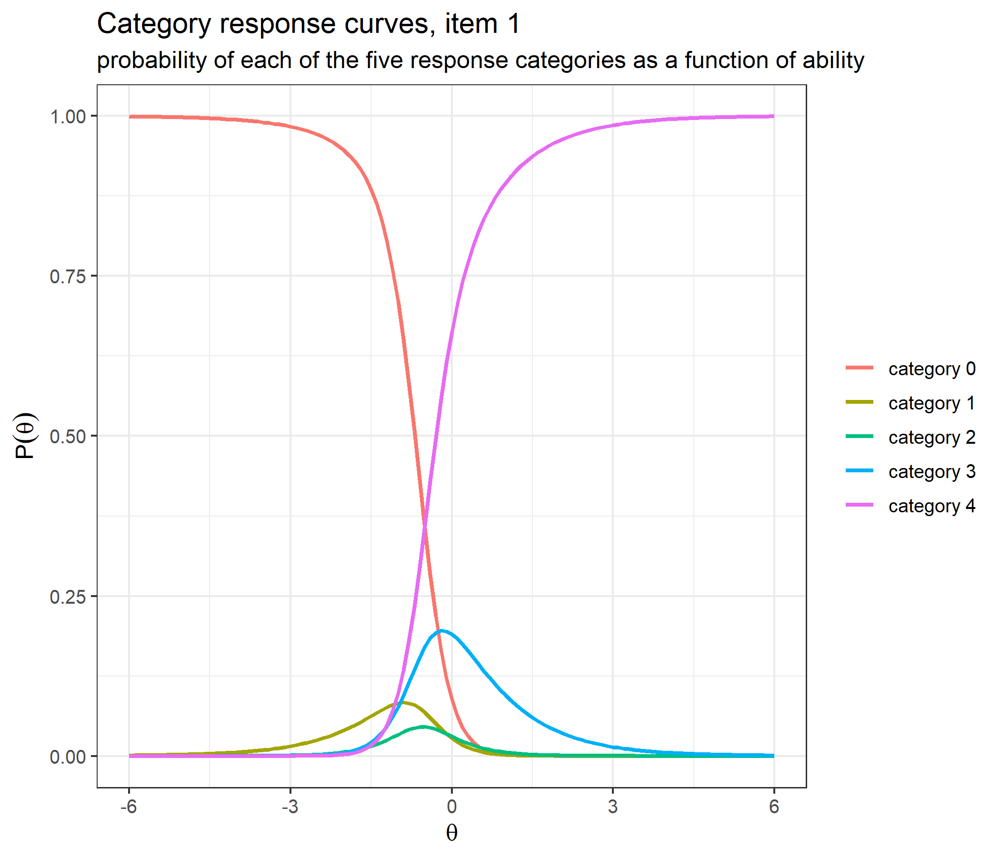
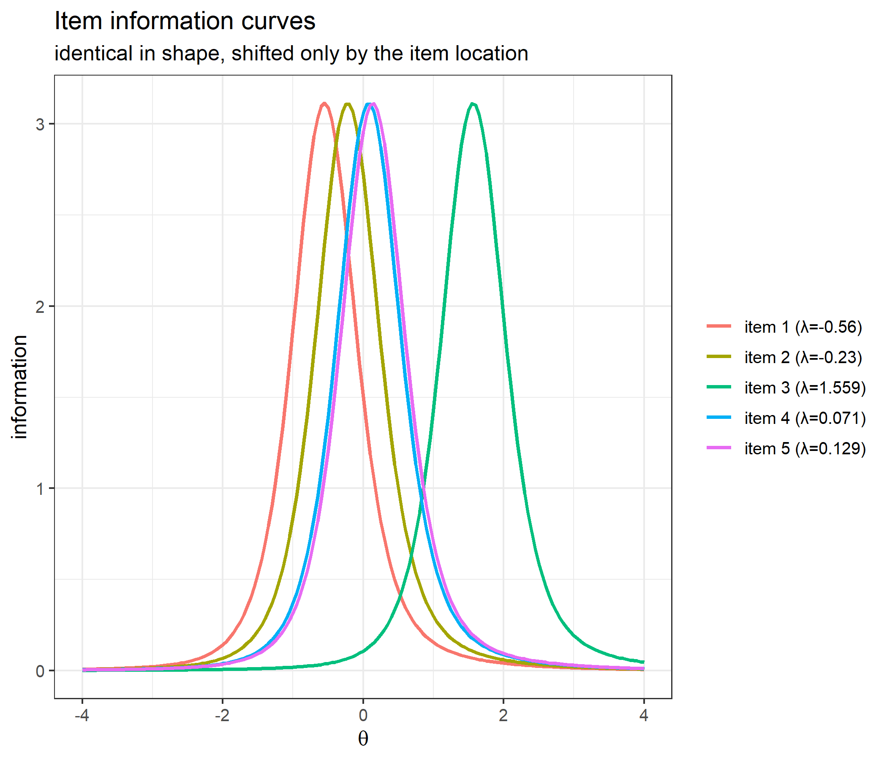
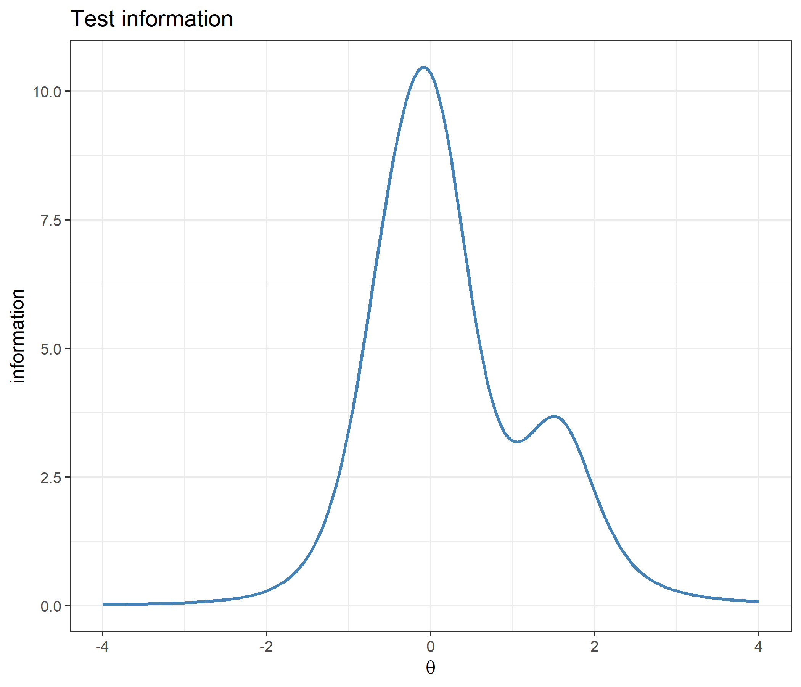
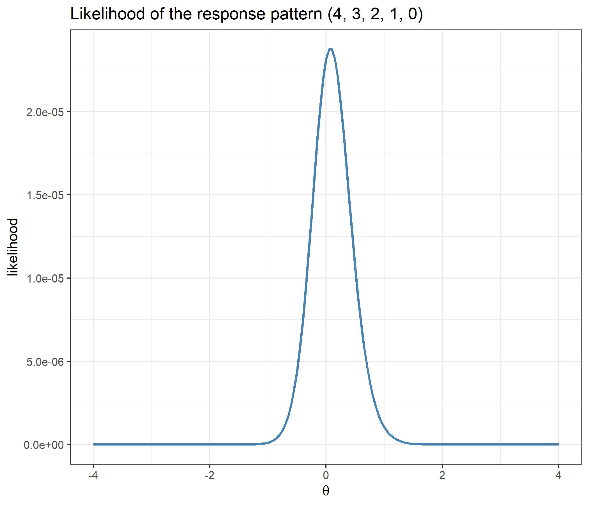
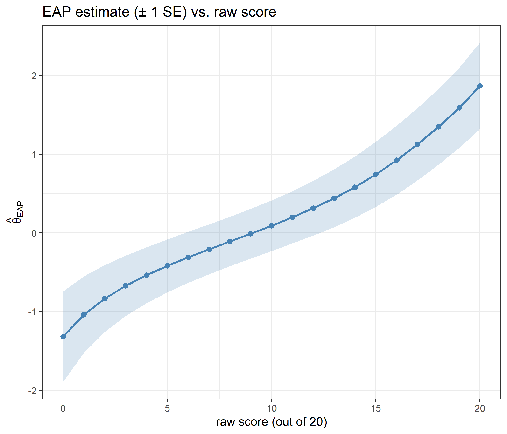
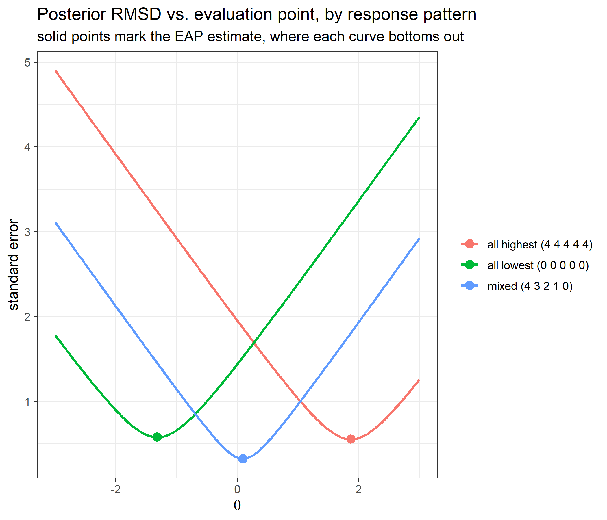
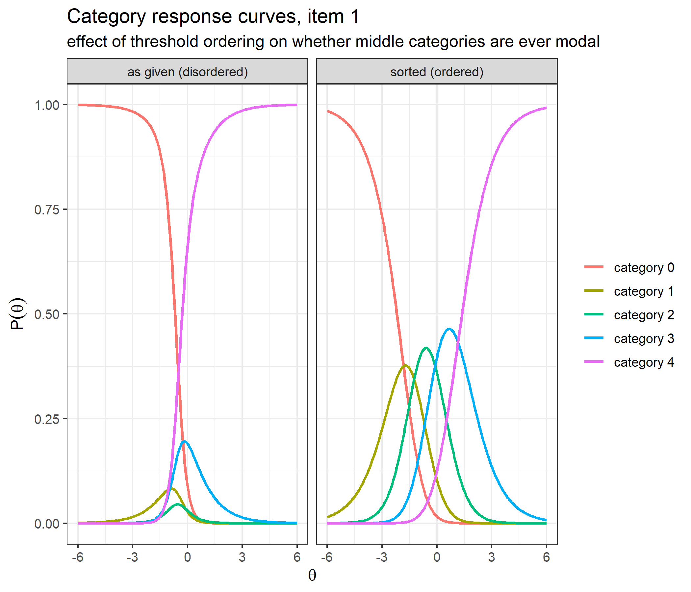
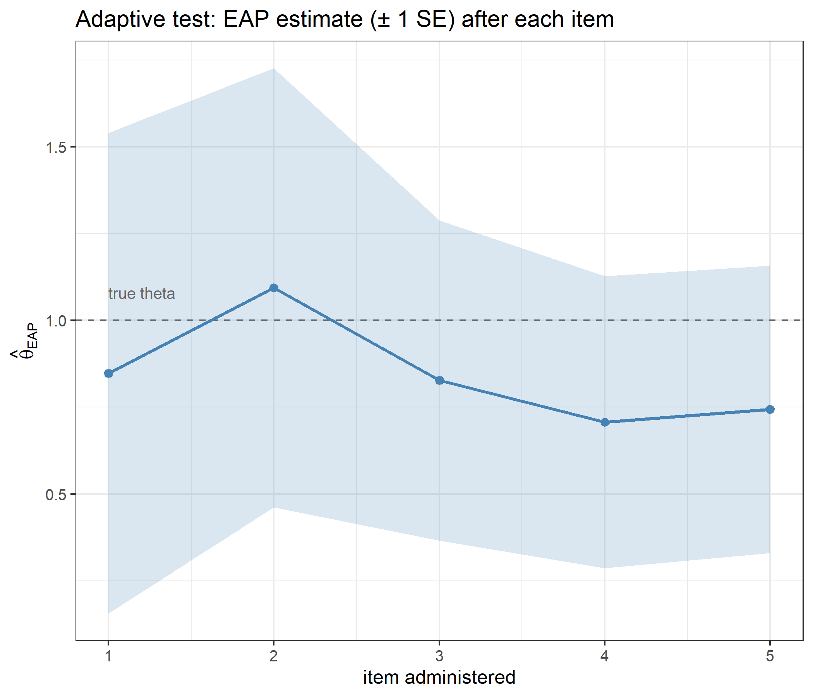

Code
library(ggplot2)
library(catR)
source("R/cat_eap_common.R", local = knitr::knit_global())
source("R/cat_eap_rsm.R", local = knitr::knit_global())The functions in cat_eap_common.R and cat_eap_rsm.R are adapted from the source code of the catR package by David Magis, Gilles Raîche and Juan Ramón Barrada (Magis & Raîche, 2012; Magis & Barrada, 2017). The model parameterisations, the formulas for the response probabilities and their derivatives, the item information, maximum-information item selection and the trapezoidal EAP integration all follow catR’s Pi(), Ii(), nextItem(), eapEst(), eapSem() and integrate.catR(), and much of the code keeps catR’s structure line for line. The purpose of the rewrite is teaching, not replacement: every step is written out in plain base R so that it can be read, and catR remains the reference implementation that every function is checked against below. catR is free software distributed under the GNU General Public License (version 3 or later).
Andrich’s Rating Scale Model (RSM) is the Rasch-family model for questionnaires in which every item shares one ordered response format: a Likert scale with categories such as “strongly disagree” … “strongly agree”, scored \(0, 1, \ldots, m\). Each item has its own location on the latent trait, but the thresholds between adjacent categories are common to the whole scale, so the model assumes the response format works the same way for every item (Andrich, 1978). That makes it the natural model for attitude, personality and satisfaction scales, and the most economical of the polytomous models in this series.
working_examples/cat_eap_rsm.R implements everything a computerised adaptive test needs under the RSM (category probabilities, item information, next-item selection and EAP scoring), and relies on two model-free helpers from working_examples/cat_eap_common.R. All eight functions are plain base R with no runtime dependency on catR:
| Function | File | Purpose | catR function it mirrors |
|---|---|---|---|
density_function() |
cat_eap_common.R |
Normal density (the prior) | stats::dnorm() |
integrate_cat() |
cat_eap_common.R |
Trapezoidal numerical integration | catR::integrate.catR() |
compute_pi_rsm() |
cat_eap_rsm.R |
Category probabilities and their first three derivatives | catR::Pi(model = "RSM") |
compute_ii_rsm() |
cat_eap_rsm.R |
Item information and its first two derivatives | catR::Ii(model = "RSM") |
compute_next_item_rsm() |
cat_eap_rsm.R |
Maximum Fisher information item selection | catR::nextItem(model = "RSM", criterion = "MFI") |
compute_likelihood_rsm() |
cat_eap_rsm.R |
Likelihood of a polytomous response pattern | the internal LL() helper of catR::eapEst() / catR::eapSem() |
compute_eap_rsm() |
cat_eap_rsm.R |
EAP ability estimate | catR::eapEst(model = "RSM") |
compute_eap_se_rsm() |
cat_eap_rsm.R |
EAP standard error | catR::eapSem(model = "RSM") |
This vignette explains the theory behind each function, checks every one of them against its catR counterpart, and then uses them to run a small adaptive test end to end.
library(ggplot2)
library(catR)
source("R/cat_eap_common.R", local = knitr::knit_global())
source("R/cat_eap_rsm.R", local = knitr::knit_global())A dichotomous model needs one curve per item: the probability of a correct response. A polytomous item scored \(0,1,\ldots,m\) needs \(m+1\) curves, one per category, that sum to 1 at every ability level. The RSM builds those curves from a step-by-step argument: to land in category \(k\) an examinee has to pass each of the \(k\) thresholds below it.
\[P_{jk}(\theta) = P(X_j = k \mid \theta) = \frac{\gamma_{jk}(\theta)}{\sum_{h=0}^{m}\gamma_{jh}(\theta)}, \qquad \gamma_{jk}(\theta) = \exp\left[\sum_{t=1}^{k} D\big(\theta - (\lambda_j + \delta_t)\big)\right]\]
with the empty sum for \(k=0\) taken to be zero, so \(\gamma_{j0}=1\).
The shared-threshold assumption is what separates the RSM from the Partial Credit Model (PCM) of Masters (1982). Under the PCM each item has its own steps \(\delta_{j1},\ldots,\delta_{jm}\); the RSM is the special case
\[\delta_{jk} = \lambda_j + \delta_k, \qquad k = 1,\ldots,m,\]
in which every item has the same spacing of steps and items differ only by where that pattern is placed. For a scale with \(n\) items and \(m+1\) categories this cuts the number of parameters from \(n \times m\) to \(n + m - 1\). One of the \(n + m\) values \(\lambda_j\) and \(\delta_k\) is redundant: adding a constant to every \(\lambda_j\) and subtracting it from every \(\delta_k\) leaves every step \(\lambda_j + \delta_k\), and with it every probability, unchanged, so calibration fixes it with a constraint such as thresholds that sum to zero. The equivalence with the PCM is checked against catR’s PCM in a worked example below.
With a single threshold (\(m = 1\)) the RSM is the dichotomous Rasch model,
\[P_{j1}(\theta) = \frac{e^{D(\theta - b_j)}}{1 + e^{D(\theta - b_j)}}, \qquad b_j = \lambda_j + \delta_1,\]
the 4PL model with \(a_j = 1\), \(c_j = 0\) and \(d_j = 1\).
compute_pi_rsm() reads the bank one row per item:
| Column | Content |
|---|---|
| 1 | \(\lambda_j\), the item location |
| 2 to \(m+1\) | \(\delta_1,\ldots,\delta_m\), the category thresholds |
so the number of response categories is ncol(bank): a five-point scale scored 0 to 4 needs a bank with 5 columns. Under the rating scale assumption the threshold columns are identical down every row, \(\texttt{bank}[j,\,t+1] = \delta_t\) for every item \(j\). The code does not enforce this; given rows with different thresholds \(\delta_{jt} = \texttt{bank}[j,\,t+1]\) it simply computes the partial credit model with steps \(\lambda_j + \delta_{jt}\) (checked in the same worked example). compute_pi_rsm(), which every other function calls, begins with bank <- rbind(bank), so a single item may also be passed as a plain vector \((\lambda_j, \delta_1, \ldots, \delta_m)\).
An item with fewer categories than the widest item is padded with NA at the end of its row. Because the exponent is accumulated threshold by threshold, an NA makes every later category disappear too, which is why the padding has to be trailing. The exact rule is: if the first missing threshold of item \(j\) is \(\delta_t\), the item has \(m_j = t - 1\) thresholds and the categories \(0, \ldots, m_j\), whatever the later columns hold. The missing categories are dropped before anything is summed, so every sum over the categories of item \(j\) below runs over \(h = 0, \ldots, m_j\); \(P_{jk}\) and its derivatives are returned as NA for \(k > m_j\), and the information sums skip those cells (na.rm = TRUE).
For item \(j\) with categories \(k = 0, 1, \ldots, m\), the code builds
\[ z_{jk} = \sum_{t=1}^{k} D\big(\theta - (\lambda_j + \delta_t)\big), \quad z_{j0} = 0, \qquad \gamma_{jk} = e^{z_{jk}}, \qquad \gamma'_{jk} = k\,\gamma_{jk}, \quad \gamma''_{jk} = k^2\,\gamma_{jk}, \quad \gamma'''_{jk} = k^3\,\gamma_{jk} \]
and the four sums over the categories of the item
\[ S_r = \sum_{h=0}^{m} h^r\,\gamma_{jh}, \qquad r = 0, 1, 2, 3 . \]
The probability and its first three derivatives are then
\[ \begin{aligned} P_{jk} &= \frac{\gamma_{jk}}{S_0} \\[6pt] P'_{jk} &= \frac{\gamma'_{jk}}{S_0} - \frac{\gamma_{jk}\,S_1}{S_0^2} \\[6pt] P''_{jk} &= \frac{\gamma''_{jk}}{S_0} - \frac{2\,\gamma'_{jk}\,S_1}{S_0^2} - \frac{\gamma_{jk}\,S_2}{S_0^2} + \frac{2\,\gamma_{jk}\,S_1^2}{S_0^3} \\[6pt] P'''_{jk} &= \frac{\gamma'''_{jk}}{S_0} - \frac{\gamma_{jk}\,S_3 + 3\,\gamma'_{jk}\,S_2 + 3\,\gamma''_{jk}\,S_1}{S_0^2} + \frac{6\,\gamma_{jk}\,S_1 S_2 + 6\,\gamma'_{jk}\,S_1^2}{S_0^3} - \frac{6\,\gamma_{jk}\,S_1^3}{S_0^4} \end{aligned} \]
| Symbol | Code |
|---|---|
| \(z_{jk}\) | dj |
| \(k\) | v |
| \(\gamma_{jk}\), \(\gamma'_{jk}\), \(\gamma''_{jk}\), \(\gamma'''_{jk}\) | gamma, dgamma, d2gamma, d3gamma |
| \(S_0\), \(S_1\), \(S_2\), \(S_3\) | sum_gamma, sum_dgamma, sum_d2gamma, sum_d3gamma |
| \(P\), \(P'\), \(P''\), \(P'''\) | Pi, dPi, d2Pi, d3Pi |
Because \(\gamma'_{jk}/S_0 = k\,P_{jk}\), the same derivatives can be written with the item’s expected score \(E_j = \sum_h h\,P_{jh}\) and the central moments \(V_j = \sum_h (h - E_j)^2 P_{jh}\) and \(M_j = \sum_h (h - E_j)^3 P_{jh}\):
\[ P'_{jk} = P_{jk}\,(k - E_j), \qquad P''_{jk} = P_{jk}\big[(k - E_j)^2 - V_j\big], \qquad P'''_{jk} = P_{jk}\big[(k - E_j)^3 - 3V_j\,(k - E_j) - M_j\big]. \]
The metric constant. The true derivative of \(\gamma_{jk}\) with respect to \(\theta\) is \(D\,k\,\gamma_{jk}\), but the code follows catR and uses \(k\,\gamma_{jk}\), which is its derivative with respect to \(D\theta\). With \(D = 1\) the formulas above are exact. With any other \(D\) they are derivatives with respect to \(D\theta\), and the derivatives with respect to \(\theta\) are \(D\,P'\), \(D^2 P''\) and \(D^3 P'''\). (catR’s 4PL and graded response derivatives do include \(D\); leaving it out is specific to its PCM, GPCM and RSM code.)
No probability floor. The dichotomous code replaces a probability of exactly 0 or 1 with \(10^{-10}\) or \(1-10^{-10}\); compute_pi_rsm(), like catR::Pi() for the RSM, applies no floor, clipping or renormalisation, and needs none. Every \(\gamma_{jk}\) is a positive exponential, so every \(P_{jk}\) is positive at any ability a quadrature grid would use, and the information below divides only by the \(P_{jk}\) themselves, never by \(1 - P_{jk}\). The only special values are the NAs of the padding, handled by the rule in the previous section.
For a dichotomous item, Fisher information is the familiar \(P'^2 / \big(P(1-P)\big)\). The polytomous generalisation sums the same quantity over categories:
\[I_j(\theta) = \sum_{k=0}^{m} \frac{\big[\partial P_{jk}(\theta)/\partial\theta\big]^2}{P_{jk}(\theta)}\]
These are not two different formulas. For \(m=1\) the two categories are \(P\) and \(1-P\), with derivatives \(P'\) and \(-P'\), so the sum collapses to \(P'^2/P + P'^2/(1-P) = P'^2/\big(P(1-P)\big)\). Test information is the sum of the item informations,
\[I(\theta) = \sum_{j=1}^{n} I_j(\theta)\]
For a Rasch-family model the sum simplifies. Substituting the exact first derivative gives \(I_j(\theta) = D^2\,V_j(\theta)\), the variance of the item score at \(\theta\) multiplied by \(D^2\); and since \(\partial E_j/\partial\theta = D\,V_j\), the information is also \(D\) times the slope of the expected-score curve. Integrating over \(\theta\), the area under any RSM item’s information curve is therefore \(D\,m\), whatever its thresholds.
compute_ii_rsm() returns the information together with its first two derivatives, obtained by differentiating each category term \(P'^2/P\) and summing:
\[\texttt{Ii} = \sum_k \frac{P'^2_{jk}}{P_{jk}},\qquad \texttt{dIi} = \sum_k \left(\frac{2P'_{jk}P''_{jk}}{P_{jk}} - \frac{P'^3_{jk}}{P_{jk}^2}\right),\qquad \texttt{d2Ii} = \sum_k \left(\frac{2P''^2_{jk} + 2P'_{jk}P'''_{jk}}{P_{jk}} - \frac{5P'^2_{jk}P''_{jk}}{P_{jk}^2} + \frac{2P'^4_{jk}}{P_{jk}^3}\right)\]
with the derivatives \(P'\), \(P''\), \(P'''\) taken from dPi, d2Pi and d3Pi. In the moment notation of the previous section these are the variance, the third central moment and the fourth cumulant of the item score:
\[\texttt{Ii} = V_j, \qquad \texttt{dIi} = M_j, \qquad \texttt{d2Ii} = \sum_{h} (h - E_j)^4\,P_{jh} - 3V_j^2\]
Because \(P'\), \(P''\) and \(P'''\) carry catR’s \(D\) convention, so does the information: Ii is \(I_j/D^2\), dIi is \(D^{-3}\,\partial I_j/\partial\theta\) and d2Ii is \(D^{-4}\,\partial^2 I_j/\partial\theta^2\). They are the information about \(D\theta\) and its derivatives with respect to \(D\theta\), so as functions of \(\theta\) they are not even consistent with one another: the \(\theta\)-derivative of the returned Ii is \(D\) times dIi.
An adaptive test picks, at each step, the unadministered item that is most informative at the current ability estimate, the Maximum Fisher Information (MFI) criterion:
\[j^\ast = \arg\max_{j \notin \texttt{out}} I_j(\hat\theta)\]
where out holds the indices of the items already given. compute_next_item_rsm() computes Ii for every available item and returns the index of the chosen item, its Ii as info (so the reported value carries the \(D\) convention above, while the choice does not: dividing every item’s information by the same \(D^2\) leaves the ranking unchanged) and the indices that were available.
The function also has a randomesque argument: instead of always taking the single best item it draws uniformly from the randomesque most informative ones. With \(k = \min(\texttt{randomesque},\ \text{number of available items})\), the next item is drawn uniformly from the \(k\) available items with the largest \(I_j(\hat\theta)\), ties broken by item order as order() does; \(k = 1\) is pure MFI. This is standard exposure control; pure MFI would give the same handful of items to almost everyone, which is both a security problem and a waste of the bank. The rule holds for randomesque equal to 1 or at least 2 (2.5 acts as 2). For any other value below 2 the code passes a single index to sample(), which then draws uniformly from the available items up to and including the best one, not from the top \(k\), so randomesque should be a whole number.
Two differences from catR::nextItem() matter only for ties: when several items are exactly tied for the maximum, catR draws one of them at random while this function takes the first; and with randomesque above 1, catR also keeps every item tied with the last one kept. In an RSM bank exact ties are not exotic: two items with the same \(\lambda_j\) have the same information at every \(\theta\).
The RSM gives this rule a special structure. Since \(P_{jk}\) depends on \(\theta\) and \(\lambda_j\) only through \(\theta - \lambda_j\), every item information curve is one common function shifted by the item location, \(I_j(\theta) = f(\theta - \lambda_j)\), as long as the items share all their thresholds (no NA padding). Two consequences follow, both checked in a worked example below:
Under local independence, the likelihood of a response pattern \(\mathbf{x} = (x_1,\ldots,x_n)\), with each \(x_j \in \{0,\ldots,m\}\) the category observed on item \(j\) (0-based, as in the code), is
\[L(\theta) = \prod_{j=1}^{n} P_{jx_j}(\theta)\]
This is the polytomous counterpart of \(\prod P_j^{x_j}(1-P_j)^{1-x_j}\). The dichotomous version uses the exponents \(x_j\) and \(1-x_j\) as a switch between two probabilities; with more than two categories the response simply indexes the right column of the probability matrix. The x[i]+1 in compute_likelihood_rsm() is index bookkeeping: categories start at 0, R columns start at 1. The product runs over the first \(n\) = length(x) rows of the bank, so bank and x must list the items in the same order. The likelihood uses only the probabilities, never their derivatives.
A prior \(\pi(\theta)\) on ability turns the likelihood into a posterior, and EAP reports its mean and standard deviation (Bock & Mislevy, 1982). The prior is normal, with mean and SD priorPar (standard normal by default):
\[\pi(\theta) = \frac{1}{\sigma\sqrt{2\pi}}\exp\!\left(-\frac{(\theta-\mu)^2}{2\sigma^2}\right), \qquad (\mu,\sigma) = \texttt{priorPar}\]
density_function() writes this out longhand, with the base \(e\) computed as exp(1) rather than a hard-coded 2.71828, which is accurate to only six significant digits. The estimate is the posterior mean
\[\hat\theta_{EAP} = \frac{\displaystyle\int \theta\,\pi(\theta)\,L(\theta)\,d\theta}{\displaystyle\int \pi(\theta)\,L(\theta)\,d\theta}\]
For a response pattern \(\mathbf{x}\), with \(L\) the likelihood above, the two integrands are
\[ \begin{aligned} g(s) &= s\,\pi(s)\,L(s),\\ h(s) &= \pi(s)\,L(s). \end{aligned} \]
On the quadrature grid \(X=(\theta_1,\ldots,\theta_Q)\), where \(Q=\texttt{nqp}\) and \(\theta_q=\texttt{lower}+(q-1)(\texttt{upper}-\texttt{lower})/(Q-1)\) (by default 33 points on \([-4, 4]\)), the estimate is approximated by
\[ \hat\theta_{EAP} \approx \frac{\operatorname{Trap}(X,\,g(X))}{\operatorname{Trap}(X,\,h(X))}, \]
where \(g(X)=(g(\theta_1),\ldots,g(\theta_Q))\) and \(h(X)=(h(\theta_1),\ldots,h(\theta_Q))\). Trap denotes the trapezoidal integration implemented by integrate_cat() below. The precision of the estimate is the posterior standard deviation
\[SE(\hat\theta_{EAP}) = \sqrt{\frac{\displaystyle\int (\theta-\hat\theta_{EAP})^2\,\pi(\theta)\,L(\theta)\,d\theta}{\displaystyle\int \pi(\theta)\,L(\theta)\,d\theta}}\]
whose numerator integrand is the squared distance from the EAP estimate times the posterior weight; the denominator is the same posterior weight used above:
\[ \begin{aligned} g_{SE}(s) &= (s-\hat\theta_{EAP})^2\,\pi(s)\,L(s),\\ h(s) &= \pi(s)\,L(s). \end{aligned} \]
Using the same quadrature grid \(X\) as above, the numerical estimate is
\[ SE(\hat\theta_{EAP}) \approx \sqrt{\frac{\operatorname{Trap}(X,\,g_{SE}(X))}{\operatorname{Trap}(X,\,h(X))}}. \]
compute_eap_se_rsm() takes the point \(\hat\theta_{EAP}\) in \(g_{SE}\) as its free argument theta: passing the EAP estimate gives the posterior standard deviation, and any other value the posterior root mean squared deviation around that value.
The normal prior is what makes EAP usable at the edges of the score range. Maximum Likelihood has no finite maximum for a pattern in which every response sits in the lowest or the highest category, whereas the prior keeps both integrals, and so the estimate and its standard error, finite.
Neither integral has a closed form, so the integrands are evaluated at the \(Q\) quadrature points and integrated with the trapezoidal rule, which approximates the area between two adjacent points by a trapezoid, the width times the average of the two heights:
\[\int f(\theta)\,d\theta \approx \sum_{q=1}^{Q-1} (\theta_{q+1}-\theta_q)\,\frac{f(\theta_q)+f(\theta_{q+1})}{2}\]
integrate_cat() implements exactly this sum, with its x the grid and its y the integrand evaluated on it; density_function() supplies \(\pi(\theta)\).
The RSM has no discrimination parameter. Writing out the likelihood,
\[L(\theta) = \frac{\exp\left[D\,\theta\sum_j x_j \;-\; D\sum_j \sum_{t=1}^{x_j}(\lambda_j + \delta_t)\right]}{\prod_j \sum_{h=0}^{m}\gamma_{jh}(\theta)}\]
the denominator does not depend on the responses, and in the numerator \(\theta\) meets the responses only through \(D\,\theta \sum_j x_j\). Two patterns with the same total score on the same items therefore have likelihoods that differ by a constant factor, which cancels from the EAP ratio: the raw score is a sufficient statistic for \(\theta\), and the EAP estimate and its standard error depend on the pattern only through its sum. Differing discriminations are exactly what makes the pattern itself informative in the 2PL and its relatives; the RSM gives that up by design.
The bank from the roxygen examples in cat_eap_rsm.R. \(\lambda_j\) varies across items; the thresholds are common to all of them.
lambdaj <- c(-0.560, -0.230, 1.559, 0.071, 0.129)
delta1 <- rep( 1.715, 5)
delta2 <- rep( 0.461, 5)
delta3 <- rep(-1.265, 5)
delta4 <- rep(-0.687, 5)
bank <- matrix(c(lambdaj, delta1, delta2, delta3, delta4), nrow = 5,
dimnames = list(1:5, c("lambdaj", "delta1", "delta2", "delta3", "delta4")))
bank lambdaj delta1 delta2 delta3 delta4
1 -0.560 1.715 0.461 -1.265 -0.687
2 -0.230 1.715 0.461 -1.265 -0.687
3 1.559 1.715 0.461 -1.265 -0.687
4 0.071 1.715 0.461 -1.265 -0.687
5 0.129 1.715 0.461 -1.265 -0.687That is 5 items with 5 response categories each, scored 0 to 4. Each threshold column holds the same value for every item, which is the rating scale assumption made concrete, and the thresholds are not in increasing order, which matters later.
catRv <- seq(-3, 3, by = 0.1)
comparison <- data.frame(x = v, density_function = density_function(v), dnorm = dnorm(v))
head(comparison) x density_function dnorm
1 -3.0 0.004431848 0.004431848
2 -2.9 0.005952532 0.005952532
3 -2.8 0.007915452 0.007915452
4 -2.7 0.010420935 0.010420935
5 -2.6 0.013582969 0.013582969
6 -2.5 0.017528300 0.017528300all.equal(comparison$density_function, comparison$dnorm)[1] TRUEmax(abs(comparison$density_function - comparison$dnorm))[1] 2.775558e-17ggplot(comparison, aes(x = x)) +
geom_line(aes(y = density_function, color = "density_function()"), linewidth = 1) +
geom_point(aes(y = dnorm, color = "dnorm()"), shape = 1) +
labs(title = "Hand-written normal density vs. dnorm()",
x = expression(theta), y = "density", color = NULL) +
theme_bw(base_size = 12)
The hand-written density and dnorm() differ by at most 2.8e-17, which is rounding error.
x <- seq(from = -3, to = 3, length = 33)
y <- round(exp(x), 2)
c(integrate_cat = integrate_cat(x, y), integrate.catR = catR::integrate.catR(x, y)) integrate_cat integrate.catR
20.09437 20.09437 all.equal(integrate_cat(x, y), catR::integrate.catR(x, y))[1] TRUEBoth approximate \(\int_{-3}^{3} e^x\,dx\) from the same 33 rounded values on the same grid and return the same number.
All four elements of the returned list (Pi, dPi, d2Pi, d3Pi) are compared with catR::Pi() at seven ability values, out to the tails at \(\pm 6\), and both metric constants. all.equal() is applied to the whole list, so names and dimnames are compared as well as values:
check_points <- expand.grid(theta = c(-6, -3, -1, 0, 0.7, 2.5, 6), D = c(1, 1.702))
pi_check <- do.call(rbind, lapply(seq_len(nrow(check_points)), function(i) {
th <- check_points$theta[i]
d <- check_points$D[i]
mine <- compute_pi_rsm(theta = th, bank = bank, D = d)
theirs <- catR::Pi(th = th, it = bank, model = "RSM", D = d)
data.frame(theta = th, D = d,
all_equal = isTRUE(all.equal(mine, theirs)),
max_diff_Pi = max(abs(mine$Pi - theirs$Pi)),
max_diff_dPi = max(abs(mine$dPi - theirs$dPi)),
max_diff_d2Pi = max(abs(mine$d2Pi - theirs$d2Pi)),
max_diff_d3Pi = max(abs(mine$d3Pi - theirs$d3Pi)))
}))
pi_check theta D all_equal max_diff_Pi max_diff_dPi max_diff_d2Pi max_diff_d3Pi
1 -6.0 1.000 TRUE 0 0 0 0
2 -3.0 1.000 TRUE 0 0 0 0
3 -1.0 1.000 TRUE 0 0 0 0
4 0.0 1.000 TRUE 0 0 0 0
5 0.7 1.000 TRUE 0 0 0 0
6 2.5 1.000 TRUE 0 0 0 0
7 6.0 1.000 TRUE 0 0 0 0
8 -6.0 1.702 TRUE 0 0 0 0
9 -3.0 1.702 TRUE 0 0 0 0
10 -1.0 1.702 TRUE 0 0 0 0
11 0.0 1.702 TRUE 0 0 0 0
12 0.7 1.702 TRUE 0 0 0 0
13 2.5 1.702 TRUE 0 0 0 0
14 6.0 1.702 TRUE 0 0 0 014 of 14 comparisons agree, and the largest absolute difference in any element of any of the four matrices is 0.
theta_grid <- seq(-6, 6, by = 0.1)
curves <- t(sapply(theta_grid, function(th) compute_pi_rsm(theta = th, bank)$Pi[1, ]))
df_curves <- data.frame(theta = theta_grid, curves)
names(df_curves)[-1] <- paste0("category ", 0:4)
df_long <- reshape2::melt(df_curves, id.vars = "theta",
variable.name = "category", value.name = "P")
ggplot(df_long, aes(x = theta, y = P, color = category)) +
geom_line(linewidth = 1) +
labs(title = "Category response curves, item 1",
subtitle = "probability of each of the five response categories as a function of ability",
x = expression(theta), y = expression(P(theta)), color = NULL) +
theme_bw(base_size = 12)
Category 0 is the most probable response at low ability and category 4 at high ability, but the middle three categories are never the most probable response anywhere. The worked example on threshold ordering below shows why: this is a property of these thresholds, not of the model.
An item with fewer categories. Setting item 5’s last threshold to NA turns it into a four-category item, scored 0 to 3, and the same comparison is repeated at every check point:
bank_mixed <- bank
bank_mixed[5, "delta4"] <- NA
P_mixed <- compute_pi_rsm(theta = 0, bank_mixed)$Pi
P_mixed[5, ] cat0 cat1 cat2 cat3 cat4
0.65835116 0.10414024 0.05772778 0.17978082 NA c(max_deviation_of_row_sum_from_1 = max(abs(rowSums(P_mixed, na.rm = TRUE) - 1)),
all_equal_at_every_check_point = all(sapply(seq_len(nrow(check_points)), function(i)
isTRUE(all.equal(compute_pi_rsm(check_points$theta[i], bank_mixed, D = check_points$D[i]),
catR::Pi(check_points$theta[i], bank_mixed, model = "RSM",
D = check_points$D[i]))))))max_deviation_of_row_sum_from_1 all_equal_at_every_check_point
1.110223e-16 1.000000e+00 Item 5’s cat4 is NA because the category does not exist, its four probabilities still sum to 1, and the whole list agrees with catR::Pi(), NAs included.
The metric constant. Agreement at \(D = 1.702\) says only that both implementations leave \(D\) out of the derivatives in the same way. Central finite differences of Pi, which is exact at every \(D\), show what the returned derivatives are:
fd_check <- do.call(rbind, lapply(c(1, 1.702), function(D) {
P <- function(t) compute_pi_rsm(t, bank, D = D)$Pi
th <- 0.7
h <- 1e-3
fd <- list(dPi = (P(th + h) - P(th - h)) / (2 * h),
d2Pi = (P(th + h) - 2 * P(th) + P(th - h)) / h^2,
d3Pi = (P(th + 2 * h) - 2 * P(th + h) + 2 * P(th - h) - P(th - 2 * h)) / (2 * h^3))
returned <- compute_pi_rsm(th, bank, D = D)
data.frame(D = D, element = names(fd), D_power = D^(1:3),
max_error_at_face_value = sapply(names(fd), function(nm) max(abs(fd[[nm]] - returned[[nm]]))),
max_error_times_D_power = sapply(1:3, function(r) max(abs(fd[[r]] - D^r * returned[[names(fd)[r]]]))),
row.names = NULL)
}))
fd_check D element D_power max_error_at_face_value max_error_times_D_power
1 1.000 dPi 1.000000 2.734839e-07 2.734839e-07
2 1.000 d2Pi 1.000000 3.704361e-07 3.704361e-07
3 1.000 d3Pi 1.000000 8.845920e-06 8.845920e-06
4 1.702 dPi 1.702000 1.367457e-01 9.888469e-07
5 1.702 d2Pi 2.896804 7.643298e-01 2.387978e-06
6 1.702 d3Pi 4.930360 4.729720e+00 2.330281e-05At \(D = 1\) the returned derivatives agree with the finite differences to within finite-difference error. At \(D = 1.702\), taken at face value, they are wrong by up to 0.137, 0.764 and 4.730; multiplied by \(D\), \(D^2\) and \(D^3\) they agree again, as the theory section says.
All three elements returned by compute_ii_rsm() (Ii, dIi, d2Ii) against catR::Ii(), at the same points:
ii_check <- do.call(rbind, lapply(seq_len(nrow(check_points)), function(i) {
th <- check_points$theta[i]
d <- check_points$D[i]
mine <- compute_ii_rsm(theta = th, bank = bank, D = d)
theirs <- catR::Ii(th = th, it = bank, model = "RSM", D = d)
data.frame(theta = th, D = d,
all_equal = isTRUE(all.equal(mine, theirs)),
max_diff_Ii = max(abs(mine$Ii - theirs$Ii)),
max_diff_dIi = max(abs(mine$dIi - theirs$dIi)),
max_diff_d2Ii = max(abs(mine$d2Ii - theirs$d2Ii)))
}))
ii_check theta D all_equal max_diff_Ii max_diff_dIi max_diff_d2Ii
1 -6.0 1.000 TRUE 0 0 0
2 -3.0 1.000 TRUE 0 0 0
3 -1.0 1.000 TRUE 0 0 0
4 0.0 1.000 TRUE 0 0 0
5 0.7 1.000 TRUE 0 0 0
6 2.5 1.000 TRUE 0 0 0
7 6.0 1.000 TRUE 0 0 0
8 -6.0 1.702 TRUE 0 0 0
9 -3.0 1.702 TRUE 0 0 0
10 -1.0 1.702 TRUE 0 0 0
11 0.0 1.702 TRUE 0 0 0
12 0.7 1.702 TRUE 0 0 0
13 2.5 1.702 TRUE 0 0 0
14 6.0 1.702 TRUE 0 0 014 of 14 comparisons agree, with a largest absolute difference of 0. Because catR shares the \(D\) convention, the true information is checked separately: it is \(D^2 V_j\), which needs only the probabilities, and its finite-difference derivatives are compared with what the function returns (each ratio is a least-squares fit over the five items):
info_check <- do.call(rbind, lapply(c(1, 1.702), function(D) {
I_true <- function(t) { # D^2 Var(X | theta), from the probabilities only
p <- compute_pi_rsm(t, bank, D = D)$Pi
D^2 * as.numeric(p %*% (0:4)^2 - (p %*% (0:4))^2)
}
I_returned <- function(t) compute_ii_rsm(t, bank, D = D)$Ii
th <- 0.7
h <- 1e-4
fd <- function(f) (f(th + h) - f(th - h)) / (2 * h)
fd2 <- function(f) (f(th + h) - 2 * f(th) + f(th - h)) / h^2
ratio <- function(a, b) sum(a * b) / sum(b^2)
returned <- compute_ii_rsm(th, bank, D = D)
data.frame(D = D,
true_I_over_Ii = ratio(I_true(th), returned$Ii),
true_dI_over_dIi = ratio(fd(I_true), returned$dIi),
true_d2I_over_d2Ii = ratio(fd2(I_true), returned$d2Ii),
theta_derivative_of_Ii_over_dIi = ratio(fd(I_returned), returned$dIi))
}))
info_check D true_I_over_Ii true_dI_over_dIi true_d2I_over_d2Ii
1 1.000 1.000000 1.000000 1.000000
2 1.702 2.896804 4.930361 8.391473
theta_derivative_of_Ii_over_dIi
1 1.000
2 1.702At \(D = 1\) the returned values are the information and its first two derivatives. At \(D = 1.702\) they are too small by 2.8968 \(= D^2\), 4.9304 \(= D^3\) and 8.3915 \(= D^4\), and the \(\theta\)-derivative of the returned Ii is 1.7020 \(= D\) times dIi, because every returned value is a derivative with respect to \(D\theta\). Item selection is untouched, since every item’s information is divided by the same \(D^2\), and so is the EAP estimate, which uses only the probabilities; but the info that compute_next_item_rsm() reports, or a standard error computed as \(1/\sqrt{\sum_j I_j}\) from Ii, would be wrong by a factor \(D^2\) and \(D\) respectively.
info_grid <- seq(-4, 4, by = 0.05)
info <- t(sapply(info_grid, function(th) compute_ii_rsm(th, bank)$Ii))
df_info <- data.frame(theta = info_grid, info)
names(df_info)[-1] <- paste0("item ", 1:5, " (λ=", lambdaj, ")")
df_info_long <- reshape2::melt(df_info, id.vars = "theta",
variable.name = "item", value.name = "information")
ggplot(df_info_long, aes(x = theta, y = information, color = item)) +
geom_line(linewidth = 1) +
labs(title = "Item information curves",
subtitle = "identical in shape, shifted only by the item location",
x = expression(theta), y = "information", color = NULL) +
theme_bw(base_size = 12)
df_test <- data.frame(theta = info_grid, information = rowSums(info))
ggplot(df_test, aes(x = theta, y = information)) +
geom_line(linewidth = 1, color = "steelblue") +
labs(title = "Test information", x = expression(theta), y = "information") +
theme_bw(base_size = 12)
The test information is the sum of the five item curves. That every item curve is the same curve shifted by its \(\lambda_j\) is checked in the worked example on MFI and the nearest item location below.
mine <- compute_next_item_rsm(theta = 0, bank)
theirs <- catR::nextItem(bank, model = "RSM", theta = 0, criterion = "MFI")
c(mine_item = mine$item, catR_item = theirs$item,
mine_info = mine$info, catR_info = theirs$info)mine_item catR_item mine_info catR_info
4.000000 4.000000 3.061434 3.061434 The same comparison across several ability values, with and without items excluded through out, at both metric constants:
selection_points <- expand.grid(theta = c(-1.5, -0.4, 0, 0.5, 1.2, 2.5),
out = c("none", "4", "4,5", "1,2,4,5"),
D = c(1, 1.702), stringsAsFactors = FALSE)
selection_check <- do.call(rbind, lapply(seq_len(nrow(selection_points)), function(i) {
s <- selection_points[i, ]
o <- if (s$out == "none") NULL else as.integer(strsplit(s$out, ",")[[1]])
a <- compute_next_item_rsm(theta = s$theta, bank, out = o, D = s$D)
b <- catR::nextItem(bank, model = "RSM", theta = s$theta, out = o,
criterion = "MFI", D = s$D)
data.frame(s, mine = a$item, catR = b$item, info_difference = abs(a$info - b$info))
}))
head(selection_check[selection_check$D == 1, ], 12) theta out D mine catR info_difference
1 -1.5 none 1 1 1 0
2 -0.4 none 1 1 1 0
3 0.0 none 1 4 4 0
4 0.5 none 1 5 5 0
5 1.2 none 1 3 3 0
6 2.5 none 1 3 3 0
7 -1.5 4 1 1 1 0
8 -0.4 4 1 1 1 0
9 0.0 4 1 5 5 0
10 0.5 4 1 5 5 0
11 1.2 4 1 3 3 0
12 2.5 4 1 3 3 0c(settings = nrow(selection_check),
same_item = sum(selection_check$mine == selection_check$catR),
max_info_difference = max(selection_check$info_difference)) settings same_item max_info_difference
48 48 0 compute_next_item_rsm() picks the same item as catR::nextItem() in 48 of 48 settings, and reports the same information.
catR has no exported likelihood function, so the check reconstructs the same product from catR’s own probability matrix, for several patterns, ability values and both metric constants:
lik_patterns <- list(c(4, 3, 2, 1, 0), c(0, 0, 0, 0, 0), c(4, 4, 4, 4, 4), c(1, 3, 0, 2, 4))
lik_points <- expand.grid(theta = c(-2, 0.3, 1.5), pattern = seq_along(lik_patterns),
D = c(1, 1.702))
lik_check <- do.call(rbind, lapply(seq_len(nrow(lik_points)), function(i) {
s <- lik_points[i, ]
x <- lik_patterns[[s$pattern]]
P_catR <- catR::Pi(th = s$theta, it = bank, model = "RSM", D = s$D)$Pi
data.frame(theta = s$theta, D = s$D, pattern = paste(x, collapse = " "),
compute_likelihood_rsm = compute_likelihood_rsm(s$theta, bank, x, D = s$D),
from_catR_Pi = prod(P_catR[cbind(1:5, x + 1)]))
}))
head(lik_check) theta D pattern compute_likelihood_rsm from_catR_Pi
1 -2.0 1 4 3 2 1 0 9.032158e-12 9.032158e-12
2 0.3 1 4 3 2 1 0 1.873222e-05 1.873222e-05
3 1.5 1 4 3 2 1 0 4.243898e-08 4.243898e-08
4 -2.0 1 0 0 0 0 0 8.648236e-01 8.648236e-01
5 0.3 1 0 0 0 0 0 1.840569e-04 1.840569e-04
6 1.5 1 0 0 0 0 0 2.562088e-12 2.562088e-12c(comparisons = nrow(lik_check),
all_equal = isTRUE(all.equal(lik_check$compute_likelihood_rsm, lik_check$from_catR_Pi)),
max_relative_difference = max(abs(lik_check$compute_likelihood_rsm / lik_check$from_catR_Pi - 1))) comparisons all_equal max_relative_difference
2.400000e+01 1.000000e+00 2.220446e-16 response <- c(4, 3, 2, 1, 0)
lik_grid <- seq(-4, 4, by = 0.05)
df_lik <- data.frame(theta = lik_grid,
likelihood = sapply(lik_grid, function(th)
compute_likelihood_rsm(th, bank, response)))
ggplot(df_lik, aes(x = theta, y = likelihood)) +
geom_line(linewidth = 1, color = "steelblue") +
labs(title = "Likelihood of the response pattern (4, 3, 2, 1, 0)",
x = expression(theta), y = "likelihood") +
theme_bw(base_size = 12)
Seven patterns, including the two extreme ones for which Maximum Likelihood has no finite estimate, at both metric constants. The standard error is evaluated at the function’s own EAP estimate in both implementations:
patterns <- list(c(0, 0, 0, 0, 0), c(1, 1, 1, 1, 1), c(2, 2, 2, 2, 2),
c(3, 3, 3, 3, 3), c(4, 4, 4, 4, 4), c(4, 3, 2, 1, 0),
c(0, 4, 0, 4, 0))
validation <- do.call(rbind, lapply(c(1, 1.702), function(d) {
do.call(rbind, lapply(patterns, function(x) {
th_mine <- compute_eap_rsm(bank, x, D = d)
th_catR <- catR::eapEst(bank, x, model = "RSM", D = d)
data.frame(D = d, pattern = paste(x, collapse = " "),
eap_mine = th_mine,
eap_catR = th_catR,
se_mine = compute_eap_se_rsm(th_mine, bank, x, D = d),
se_catR = catR::eapSem(th_catR, bank, x, model = "RSM", D = d))
}))
}))
validation D pattern eap_mine eap_catR se_mine se_catR
1 1.000 0 0 0 0 0 -1.31916068 -1.31916068 0.5754749 0.5754749
2 1.000 1 1 1 1 1 -0.41842987 -0.41842987 0.3354186 0.3354186
3 1.000 2 2 2 2 2 0.09165378 0.09165378 0.3218065 0.3218065
4 1.000 3 3 3 3 3 0.74387510 0.74387510 0.4137023 0.4137023
5 1.000 4 4 4 4 4 1.86908014 1.86908014 0.5508972 0.5508972
6 1.000 4 3 2 1 0 0.09165378 0.09165378 0.3218065 0.3218065
7 1.000 0 4 0 4 0 -0.10884482 -0.10884482 0.3141889 0.3141889
8 1.702 0 0 0 0 0 -1.18754126 -1.18754126 0.5441908 0.5441908
9 1.702 1 1 1 1 1 -0.31357345 -0.31357345 0.2228273 0.2228273
10 1.702 2 2 2 2 2 0.05772902 0.05772902 0.2072737 0.2072737
11 1.702 3 3 3 3 3 0.61786025 0.61786025 0.3470257 0.3470257
12 1.702 4 4 4 4 4 1.94754595 1.94754595 0.4618246 0.4618246
13 1.702 4 3 2 1 0 0.05772902 0.05772902 0.2072737 0.2072737
14 1.702 0 4 0 4 0 -0.08496416 -0.08496416 0.2045996 0.2045996c(eap_all_equal = isTRUE(all.equal(validation$eap_mine, validation$eap_catR)),
se_all_equal = isTRUE(all.equal(validation$se_mine, validation$se_catR)),
max_eap_difference = max(abs(validation$eap_mine - validation$eap_catR)),
max_se_difference = max(abs(validation$se_mine - validation$se_catR))) eap_all_equal se_all_equal max_eap_difference max_se_difference
1.000000e+00 1.000000e+00 0.000000e+00 1.110223e-16 Both the point estimate and the standard error reproduce catR across all 14 rows: the largest absolute differences are 0 for the estimate and 1.1e-16 for the standard error, including the two extreme patterns.
Five response patterns, all with a total of 10, spread over the items in completely different ways:
same_total <- list(c(2, 2, 2, 2, 2), c(4, 3, 2, 1, 0), c(0, 1, 2, 3, 4),
c(4, 4, 2, 0, 0), c(3, 3, 2, 1, 1))
sufficiency <- data.frame(
pattern = sapply(same_total, paste, collapse = " "),
raw_score = sapply(same_total, sum),
theta_EAP = sapply(same_total, function(x) compute_eap_rsm(bank, x)))
sufficiency$SE <- mapply(function(x, th) compute_eap_se_rsm(th, bank, x),
same_total, sufficiency$theta_EAP)
print(sufficiency, digits = 15) pattern raw_score theta_EAP SE
1 2 2 2 2 2 10 0.0916537775674012 0.321806498884328
2 4 3 2 1 0 10 0.0916537775674012 0.321806498884328
3 0 1 2 3 4 10 0.0916537775674011 0.321806498884328
4 4 4 2 0 0 10 0.0916537775674012 0.321806498884328
5 3 3 2 1 1 10 0.0916537775674013 0.321806498884328c(spread_of_theta_EAP = diff(range(sufficiency$theta_EAP)),
spread_of_SE = diff(range(sufficiency$SE)))spread_of_theta_EAP spread_of_SE
1.526557e-16 5.551115e-17 The five estimates differ by at most 1.5e-16 and the standard errors by at most 5.6e-17: identical up to floating-point rounding. The reason is visible in the likelihoods themselves. Their ratio is the same constant at every quadrature point, so it cancels from both EAP integrals:
q <- seq(-4, 4, length = 33)
ratio <- sapply(q, function(th) compute_likelihood_rsm(th, bank, same_total[[2]]) /
compute_likelihood_rsm(th, bank, same_total[[1]]))
c(min_ratio = min(ratio), max_ratio = max(ratio),
relative_spread = diff(range(ratio)) / mean(ratio)) min_ratio max_ratio relative_spread
1.868703e+03 1.868703e+03 4.258610e-15 This is the Rasch-family property in action: with no discrimination parameter, \(\theta\) enters the likelihood only through the total score, so the pattern carries no information beyond its sum. Whether the examinee gave a middling answer to every item or a maximal answer to some and a minimal answer to others makes no difference to the estimate. That is a modelling choice, not a limitation to work around. It is what makes RSM scores easy to explain and to defend, since the score sheet and the model agree, and it is exactly what a model with item discriminations gives up in exchange for letting better items count for more.
Because the raw score is sufficient, one pattern per total covers every possible estimate for this bank. The chunk builds one pattern for each total from 0 to 20 by filling the items in order:
score_pattern <- function(s) {
x <- integer(5)
for (i in 1:5) { x[i] <- min(4, s); s <- s - x[i] }
x
}
results <- data.frame(raw_score = 0:20)
results$pattern <- sapply(results$raw_score, function(s) paste(score_pattern(s), collapse = " "))
results$theta_EAP <- sapply(results$raw_score, function(s) compute_eap_rsm(bank, score_pattern(s)))
results$SE <- mapply(function(s, th) compute_eap_se_rsm(th, bank, score_pattern(s)),
results$raw_score, results$theta_EAP)
results raw_score pattern theta_EAP SE
1 0 0 0 0 0 0 -1.319160680 0.5754749
2 1 1 0 0 0 0 -1.039256999 0.4862298
3 2 2 0 0 0 0 -0.833550459 0.4241763
4 3 3 0 0 0 0 -0.671899918 0.3823347
5 4 4 0 0 0 0 -0.536901124 0.3541903
6 5 4 1 0 0 0 -0.418429874 0.3354186
7 6 4 2 0 0 0 -0.310230870 0.3233868
8 7 4 3 0 0 0 -0.208090527 0.3165751
9 8 4 4 0 0 0 -0.108844820 0.3141889
10 9 4 4 1 0 0 -0.009798684 0.3159231
11 10 4 4 2 0 0 0.091653778 0.3218065
12 11 4 4 3 0 0 0.198303053 0.3320613
13 12 4 4 4 0 0 0.313307791 0.3469025
14 13 4 4 4 1 0 0.440222751 0.3662146
15 14 4 4 4 2 0 0.582721663 0.3891208
16 15 4 4 4 3 0 0.743875105 0.4137023
17 16 4 4 4 4 0 0.925176131 0.4374493
18 17 4 4 4 4 1 1.126250541 0.4589506
19 18 4 4 4 4 2 1.346642396 0.4802864
20 19 4 4 4 4 3 1.590058180 0.5081697
21 20 4 4 4 4 4 1.869080136 0.5508972c(increasing_in_raw_score = all(diff(results$theta_EAP) > 0),
lowest_theta = min(results$theta_EAP), highest_theta = max(results$theta_EAP),
raw_score_with_smallest_SE = results$raw_score[which.min(results$SE)],
raw_score_with_largest_SE = results$raw_score[which.max(results$SE)]) increasing_in_raw_score lowest_theta
1.000000 -1.319161
highest_theta raw_score_with_smallest_SE
1.869080 8.000000
raw_score_with_largest_SE
0.000000 ggplot(results, aes(x = raw_score, y = theta_EAP)) +
geom_ribbon(aes(ymin = theta_EAP - SE, ymax = theta_EAP + SE),
alpha = 0.2, fill = "steelblue") +
geom_line(color = "steelblue", linewidth = 1) +
geom_point(size = 2, color = "steelblue") +
labs(title = "EAP estimate (± 1 SE) vs. raw score",
x = "raw score (out of 20)", y = expression(hat(theta)[EAP])) +
theme_bw(base_size = 12)
The estimate rises strictly with the raw score, from -1.319 for an all-minimum pattern to 1.869 for an all-maximum one, well inside the integration bounds of \(\pm 4\): the prior pulls the posterior mean back toward zero. That regularisation is the reason to prefer EAP over Maximum Likelihood at the edges of the score range, and the price is a deliberate, known bias toward the prior mean.
The standard error is smallest at a raw score of 8 (0.314) and largest at the two ends, 0.575 at a score of 0 and 0.551 at 20. A zero or a perfect score is compatible with a wide range of low (or high) abilities, so the posterior stays broad; a mid-range score pins \(\theta\) down much more tightly against this bank.
compute_eap_se_rsm() takes theta as a free argument. Passing the EAP estimate returns the posterior standard deviation; passing anything else returns the posterior root mean squared deviation around that point.
se_grid <- seq(-3, 3, by = 0.05)
se_patterns <- list("all lowest (0 0 0 0 0)" = c(0, 0, 0, 0, 0),
"all highest (4 4 4 4 4)" = c(4, 4, 4, 4, 4),
"mixed (4 3 2 1 0)" = c(4, 3, 2, 1, 0))
se_df <- do.call(rbind, lapply(names(se_patterns), function(nm) {
data.frame(theta = se_grid,
SE = sapply(se_grid, function(th)
compute_eap_se_rsm(theta = th, bank = bank, x = se_patterns[[nm]])),
pattern = nm)
}))
eap_points <- do.call(rbind, lapply(names(se_patterns), function(nm) {
th <- compute_eap_rsm(bank, se_patterns[[nm]])
data.frame(theta = th, SE = compute_eap_se_rsm(th, bank, se_patterns[[nm]]), pattern = nm)
}))
eap_points theta SE pattern
1 -1.31916068 0.5754749 all lowest (0 0 0 0 0)
2 1.86908014 0.5508972 all highest (4 4 4 4 4)
3 0.09165378 0.3218065 mixed (4 3 2 1 0)ggplot(se_df, aes(x = theta, y = SE, color = pattern)) +
geom_line(linewidth = 1) +
geom_point(data = eap_points, size = 3) +
labs(title = "Posterior RMSD vs. evaluation point, by response pattern",
subtitle = "solid points mark the EAP estimate, where each curve bottoms out",
x = expression(theta), y = "standard error", color = NULL) +
theme_bw(base_size = 12)
Each curve bottoms out at its own EAP estimate. This is the least-squares property of a mean: the squared RMSD around any point \(t\) is the posterior variance plus \((t - \hat\theta_{EAP})^2\). Because the quadrature weights are the same in both integrals, the identity holds exactly for the numerical approximation too:
se_identity <- sapply(names(se_patterns), function(nm) {
x <- se_patterns[[nm]]
th <- compute_eap_rsm(bank, x)
se <- compute_eap_se_rsm(th, bank, x)
lhs <- sapply(se_grid, function(t) compute_eap_se_rsm(t, bank, x)^2)
max(abs(lhs - (se^2 + (se_grid - th)^2)))
})
se_identity all lowest (0 0 0 0 0) all highest (4 4 4 4 4) mixed (4 3 2 1 0)
3.552714e-15 7.105427e-15 3.552714e-15 In practice the two functions are always paired, compute_eap_se_rsm(compute_eap_rsm(bank, x), bank, x), and the free theta argument is useful mainly for showing what the pairing does.
The theory section describes the RSM as the PCM with steps \(\delta_{jk} = \lambda_j + \delta_k\). That can be checked against catR’s own PCM, whose bank holds the steps directly (one column per step, no location column):
bank_pcm <- bank[, 1] + bank[, -1] # step k of item j is lambda_j + delta_k
bank_pcm delta1 delta2 delta3 delta4
1 1.155 -0.099 -1.825 -1.247
2 1.485 0.231 -1.495 -0.917
3 3.274 2.020 0.294 0.872
4 1.786 0.532 -1.194 -0.616
5 1.844 0.590 -1.136 -0.558all.equal(compute_pi_rsm(theta = 0.4, bank),
catR::Pi(th = 0.4, it = bank_pcm, model = "PCM"))[1] TRUEall.equal(compute_eap_rsm(bank, x = c(4, 3, 2, 1, 0)),
catR::eapEst(bank_pcm, c(4, 3, 2, 1, 0), model = "PCM"))[1] TRUEThe same holds when the rows do not share their thresholds, which is what compute_pi_rsm() does if handed such a bank: it computes the PCM with steps \(\lambda_j + \delta_{jt}\).
set.seed(7)
bank_free <- bank
bank_free[, -1] <- bank_free[, -1] + round(matrix(rnorm(20, sd = 0.3), nrow = 5), 2)
all.equal(compute_pi_rsm(theta = 0.4, bank_free),
catR::Pi(th = 0.4, it = bank_free[, 1] + bank_free[, -1], model = "PCM"))[1] TRUEThe rating scale assumption therefore lives entirely in the bank: the code computes a partial credit model either way, and identical threshold columns are what make it the RSM.
The thresholds in this bank are 1.715, 0.461, -1.265, -0.687, which is not increasing. Disordered thresholds are common in real data. They mean that some categories are never the most probable response at any ability level, although every category keeps a positive probability everywhere.
modal_category <- function(b) {
th <- seq(-8, 8, by = 0.02)
sort(unique(sapply(th, function(t) which.max(compute_pi_rsm(t, b)$Pi[1, ])))) - 1
}
bank_ordered <- bank
bank_ordered[, 2:5] <- matrix(rep(sort(bank[1, 2:5]), each = 5), nrow = 5)
list(disordered = modal_category(bank),
ordered = modal_category(bank_ordered))$disordered
[1] 0 4
$ordered
[1] 0 1 2 3 4With the thresholds as given, only categories 0 and 4 are ever modal: the model says the middle three responses are never the single most likely answer for anybody. Sorting the thresholds into increasing order makes every category modal over some stretch of the scale:
curves_for <- function(b, label) {
g <- seq(-6, 6, by = 0.05)
m <- t(sapply(g, function(th) compute_pi_rsm(th, b)$Pi[1, ]))
d <- data.frame(theta = g, m)
names(d)[-1] <- paste0("category ", 0:4)
out <- reshape2::melt(d, id.vars = "theta",
variable.name = "category", value.name = "P")
out$thresholds <- label
out
}
both <- rbind(curves_for(bank, "as given (disordered)"),
curves_for(bank_ordered, "sorted (ordered)"))
ggplot(both, aes(x = theta, y = P, color = category)) +
geom_line(linewidth = 0.9) +
facet_wrap(~ thresholds) +
labs(title = "Category response curves, item 1",
subtitle = "effect of threshold ordering on whether middle categories are ever modal",
x = expression(theta), y = expression(P(theta)), color = NULL) +
theme_bw(base_size = 12)
The information consequence runs the other way:
g <- seq(-15, 15, by = 0.01)
item_info <- function(b) sapply(g, function(t) compute_ii_rsm(t, b[1, , drop = FALSE])$Ii)
info_disordered <- item_info(bank)
info_ordered <- item_info(bank_ordered)
half_width <- function(i) diff(range(g[i >= max(i) / 2]))
g_test <- seq(-8, 8, by = 0.02)
test_info <- function(b) sapply(g_test, function(t) sum(compute_ii_rsm(t, b)$Ii))
ordering_info <- data.frame(
thresholds = c("as given (disordered)", "sorted (ordered)"),
peak_item_information = c(max(info_disordered), max(info_ordered)),
width_at_half_peak = c(half_width(info_disordered), half_width(info_ordered)),
area_under_curve = c(integrate_cat(g, info_disordered), integrate_cat(g, info_ordered)),
peak_test_information = c(max(test_info(bank)), max(test_info(bank_ordered))))
ordering_info thresholds peak_item_information width_at_half_peak
1 as given (disordered) 3.1132445 1.06
2 sorted (ordered) 0.9259241 3.90
area_under_curve peak_test_information
1 4.000000 10.469730
2 3.999997 4.138598# category probabilities of item 1 where its information peaks
at_peak <- rbind(
disordered = compute_pi_rsm(g[which.max(info_disordered)], bank[1, , drop = FALSE])$Pi[1, ],
ordered = compute_pi_rsm(g[which.max(info_ordered)], bank_ordered[1, , drop = FALSE])$Pi[1, ])
round(at_peak, 4) cat0 cat1 cat2 cat3 cat4
disordered 0.3931 0.0715 0.0455 0.1629 0.3270
ordered 0.1183 0.2895 0.3975 0.1732 0.0215extremes_at_peak <- at_peak[, "cat0"] + at_peak[, "cat4"]
extremes_at_peakdisordered ordered
0.7201391 0.1398227 Disordered thresholds concentrate information: item 1 peaks at 3.113 against 0.926 with the thresholds sorted, and the five-item test at 10.47 against 4.14. But the disordered curve is only 1.06 wide at half its peak, against 3.90, and the area under both curves is the same, 4.000 and 4.000: \(D\,m = 4\), as the theory section predicts. Threshold order does not create or destroy information, it only redistributes it. The last table shows how the peak is bought: where the disordered item is most informative, 72% of the probability sits on the two extreme categories, against 14% for the sorted item at its peak, so the item behaves more like a dichotomy between “lowest” and “highest” than like a graded scale. Higher peak information is therefore not automatically better here; it comes from the middle categories doing little distinct work, which is usually read as a sign that the response format is not being used as intended.
Items need not all share a category count. A four-point item in a five-point bank pads its unused threshold with NA, and its responses are then scored 0 to 3. In bank_mixed, the bank of the probability check in the validation section, item 5 is such an item, and its information agrees with catR too:
bank_mixed lambdaj delta1 delta2 delta3 delta4
1 -0.560 1.715 0.461 -1.265 -0.687
2 -0.230 1.715 0.461 -1.265 -0.687
3 1.559 1.715 0.461 -1.265 -0.687
4 0.071 1.715 0.461 -1.265 -0.687
5 0.129 1.715 0.461 -1.265 NAisTRUE(all.equal(compute_ii_rsm(0, bank_mixed), catR::Ii(0, bank_mixed, model = "RSM")))[1] TRUEScoring works unchanged:
response_mixed <- c(4, 3, 2, 1, 3) # item 5 can only be scored 0 to 3
th <- compute_eap_rsm(bank_mixed, response_mixed)
c(eap_mine = th,
eap_catR = catR::eapEst(bank_mixed, response_mixed, model = "RSM"),
se_mine = compute_eap_se_rsm(th, bank_mixed, response_mixed),
se_catR = catR::eapSem(th, bank_mixed, response_mixed, model = "RSM")) eap_mine eap_catR se_mine se_catR
0.6159947 0.6159947 0.3986684 0.3986684 Two cautions follow from the way the code handles NA. First, a response in a category that does not exist is not caught; the likelihood silently becomes NA, and so does the estimate, exactly as in catR:
c(likelihood = compute_likelihood_rsm(0, bank_mixed, c(4, 3, 2, 1, 4)),
eap_mine = compute_eap_rsm(bank_mixed, c(4, 3, 2, 1, 4)),
eap_catR = catR::eapEst(bank_mixed, c(4, 3, 2, 1, 4), model = "RSM"))likelihood eap_mine eap_catR
NA NA NA Second, the padding has to be at the end of the row. An NA in a middle threshold removes that category and every category above it, because each exponent is built on the previous one:
bank_hole <- bank
bank_hole[5, "delta2"] <- NA
round(compute_pi_rsm(theta = 0, bank_hole)$Pi[5, ], 6) cat0 cat1 cat2 cat3 cat4
0.863421 0.136579 NA NA NA The theory section predicts that every item in this bank reaches the same maximum information, and that MFI is close to, but not necessarily exactly, a nearest-neighbour lookup on \(\lambda_j\). The first claim is easy to check: locate each item’s information peak numerically.
peaks <- t(sapply(1:5, function(j) {
opt <- optimize(function(th) compute_ii_rsm(th, bank[j, , drop = FALSE])$Ii,
interval = c(-6, 6), maximum = TRUE, tol = 1e-10)
c(peak = opt$maximum, max_information = opt$objective)
}))
peaks <- data.frame(lambdaj = lambdaj, peaks, offset = peaks[, "peak"] - lambdaj)
peaks lambdaj peak max_information offset
1 -0.560 -0.55327782 3.113338 0.006722184
2 -0.230 -0.22327781 3.113338 0.006722190
3 1.559 1.56572218 3.113338 0.006722183
4 0.071 0.07772218 3.113338 0.006722181
5 0.129 0.13572218 3.113338 0.006722180offset <- mean(peaks$offset)
c(spread_of_offsets = diff(range(peaks$offset)),
spread_of_maxima = diff(range(peaks$max_information)))spread_of_offsets spread_of_maxima
9.818657e-09 8.881784e-16 Every item reaches the same maximum information, 3.1133, at the same offset of 0.0067 above its own \(\lambda_j\) (the spreads are at the level of the optimiser’s tolerance). The bank has no strong and weak items, only items aimed at different parts of the scale.
Whether the common curve is symmetric about its peak decides whether MFI is exactly a nearest-neighbour rule. Comparing item 1’s information at equal distances above and below its peak:
f_item1 <- function(th) compute_ii_rsm(th, bank[1, , drop = FALSE])$Ii
distance <- c(0.25, 0.5, 1, 1.5, 2)
asymmetry <- data.frame(distance = distance,
above_peak = sapply(peaks$peak[1] + distance, f_item1),
below_peak = sapply(peaks$peak[1] - distance, f_item1))
asymmetry$difference <- asymmetry$above_peak - asymmetry$below_peak
asymmetry$ratio <- asymmetry$above_peak / asymmetry$below_peak
asymmetry distance above_peak below_peak difference ratio
1 0.25 2.63204969 2.62848061 0.003569081 1.001358
2 0.50 1.69013935 1.67170752 0.018431835 1.011026
3 1.00 0.50137688 0.45665783 0.044719054 1.097927
4 1.50 0.17001457 0.12516188 0.044852691 1.358357
5 2.00 0.07837772 0.04422117 0.034156553 1.772403It is not. At every distance the information above the peak is larger than below it, by a factor that grows with distance, from 1.0014 at 0.25 to 1.77 at 2; the absolute difference is largest in between (0.0449 at 1.5) because both curves die out. With these thresholds an item stays useful for abilities somewhat above its location for longer than below it.
Now the nearest-neighbour question. MFI is compared on a fine grid with two shortcuts: the item whose \(\lambda_j\) is closest to \(\theta\), and the item whose peak \(\lambda_j +\) 0.0067 is closest to \(\theta\):
grid <- seq(-4, 4, by = 0.001)
mfi <- sapply(grid, function(th) which.max(compute_ii_rsm(th, bank)$Ii))
nearest <- sapply(grid, function(th) which.min(abs(th - lambdaj)))
nearest_shifted <- sapply(grid, function(th) which.min(abs(th - (lambdaj + offset))))
c(grid_points = length(grid),
disagree_nearest = sum(mfi != nearest),
disagree_shifted = sum(mfi != nearest_shifted)) grid_points disagree_nearest disagree_shifted
8001 34 7 grid[mfi != nearest_shifted][1] 0.851 0.852 0.853 0.854 0.855 0.856 0.857The exact switch points are where the information curves of two neighbouring items cross:
o <- order(lambdaj)
fI <- function(th, j) compute_ii_rsm(th, bank[j, , drop = FALSE])$Ii
crossings <- do.call(rbind, lapply(1:4, function(i) {
lo <- o[i]; hi <- o[i + 1]
cross <- uniroot(function(th) fI(th, lo) - fI(th, hi),
interval = c(lambdaj[lo], lambdaj[hi]), tol = 1e-12)$root
data.frame(lower_item = lo, upper_item = hi,
gap = lambdaj[hi] - lambdaj[lo],
midpoint = (lambdaj[lo] + lambdaj[hi]) / 2,
shifted_midpoint = (lambdaj[lo] + lambdaj[hi]) / 2 + offset,
crossing = cross)
}))
crossings$crossing_minus_shifted_midpoint <- crossings$crossing - crossings$shifted_midpoint
crossings lower_item upper_item gap midpoint shifted_midpoint crossing
1 1 2 0.330 -0.3950 -0.38827782 -0.38805963
2 2 4 0.301 -0.0795 -0.07277782 -0.07259718
3 4 5 0.058 0.1000 0.10672218 0.10672874
4 5 3 1.430 0.8440 0.85072218 0.85717492
crossing_minus_shifted_midpoint
1 2.181819e-04
2 1.806409e-04
3 6.551767e-06
4 6.452739e-03MFI and “closest \(\lambda_j\)” disagree at 34 of 8001 grid points; shifting by the peak offset removes most of that, but 7 points, between 0.851 and 0.857, remain. They sit between item 5 and item 3, the widest gap in the bank (1.430). There the curves cross about 0.71 from either peak, where the information is down to 33% of its maximum and the asymmetry shown above is far stronger than within the 0.165 or less that separates each closely spaced pair from its crossing. The crossing lies 0.0065 above the shifted midpoint, so the lower item keeps the lead for longer than a symmetric curve would allow. For the three closely spaced pairs the crossing is within 0.00022 of the shifted midpoint. Nearest-neighbour on \(\lambda_j\) is a good mental model of MFI in an RSM bank, and a close approximation, but it is not the rule itself; compute_next_item_rsm() computes the information and takes the maximum, as catR does.
Everything above assembles into an adaptive loop. At each step, pick the most informative unadministered item at the current estimate, collect a response, rescore, repeat. Responses are simulated from an examinee whose true ability is 1.
set.seed(1)
true_theta <- 1.0
# simulate a response to item j from an examinee at true_theta
simulate_response <- function(j, theta) {
p <- compute_pi_rsm(theta, bank[j, , drop = FALSE])$Pi[1, ]
sample(0:(length(p) - 1), size = 1, prob = p)
}
theta <- 0
administered <- integer(0)
responses <- integer(0)
trace <- data.frame()
for (step in 1:5) {
sel <- compute_next_item_rsm(theta, bank, out = administered)
administered <- c(administered, sel$item)
responses <- c(responses, simulate_response(sel$item, true_theta))
sub_bank <- bank[administered, , drop = FALSE]
theta <- compute_eap_rsm(sub_bank, responses)
se <- compute_eap_se_rsm(theta, sub_bank, responses)
trace <- rbind(trace, data.frame(step = step, item = sel$item,
lambdaj = bank[sel$item, 1],
information = sel$info,
response = tail(responses, 1),
theta_EAP = theta, SE = se))
}
trace step item lambdaj information response theta_EAP SE
1 1 4 0.071 3.0614345 4 0.8477370 0.6921008
2 2 5 0.129 1.0283671 4 1.0943270 0.6323577
3 3 3 1.559 1.7794852 0 0.8268936 0.4615481
4 4 2 -0.230 0.4439297 3 0.7069395 0.4202238
5 5 1 -0.560 0.2744511 4 0.7438751 0.4137023ggplot(trace, aes(x = step, y = theta_EAP)) +
geom_hline(yintercept = true_theta, linetype = "dashed", color = "grey40") +
geom_ribbon(aes(ymin = theta_EAP - SE, ymax = theta_EAP + SE),
alpha = 0.2, fill = "steelblue") +
geom_line(color = "steelblue", linewidth = 1) +
geom_point(size = 2, color = "steelblue") +
annotate("text", x = 1, y = true_theta + 0.08, hjust = 0,
label = "true theta", color = "grey40", size = 3.5) +
scale_x_continuous(breaks = trace$step) +
labs(title = "Adaptive test: EAP estimate (± 1 SE) after each item",
x = "item administered", y = expression(hat(theta)[EAP])) +
theme_bw(base_size = 12)
c(SE_falls_at_every_step = all(diff(trace$SE) < 0),
final_raw_score = sum(responses),
final_equals_score_table = isTRUE(all.equal(tail(trace$theta_EAP, 1),
results$theta_EAP[results$raw_score == sum(responses)]))) SE_falls_at_every_step final_raw_score final_equals_score_table
1 15 1 In this run the standard error falls at every step, from 0.692 after one item to 0.414 after five (a posterior SD is not guaranteed to shrink after every single response, only on average). The first item is item 4, the one whose information at \(\hat\theta = 0\) is largest and whose \(\lambda_j =\) 0.071 is closest to zero. Once all five items have been given, the order in which they were given no longer matters: the final estimate, 0.7439, is the entry for a raw score of 15 in the score-range table above, as sufficiency requires.
The second step is worth a closer look, because it lands in exactly the narrow band where MFI and “closest \(\lambda_j\)” disagree:
th_step2 <- trace$theta_EAP[1] # the estimate used to choose the second item
left <- setdiff(1:5, trace$item[1])
data.frame(item = left, lambdaj = lambdaj[left],
distance_to_theta = abs(th_step2 - lambdaj[left]),
information = compute_ii_rsm(th_step2, bank[left, , drop = FALSE])$Ii) item lambdaj distance_to_theta information
1 1 -0.560 1.407737 0.2052057
2 2 -0.230 1.077737 0.4223206
3 3 1.559 0.711263 0.9801187
4 5 0.129 0.718737 1.0283671After the first response the estimate is 0.8477. Of the items left, item 3 has the closest location, yet MFI chooses item 5, whose information there is higher. The estimate fell between the midpoint 0.844 of the two items’ locations and the point 0.857 where their information curves actually cross.
Pure MFI is deterministic: every examinee starting at \(\theta = 0\) receives the same first item. The randomesque argument draws at random from the \(k\) best instead.
set.seed(42)
exposure_1 <- table(replicate(2000, compute_next_item_rsm(theta = 0, bank, randomesque = 1)$item))
exposure_3 <- table(replicate(2000, compute_next_item_rsm(theta = 0, bank, randomesque = 3)$item))
exposure_1
4
2000 exposure_3
2 4 5
679 657 664 With randomesque = 1 item 4 is chosen 2000 times out of 2000. With randomesque = 3 the load is spread over items 2, 4, 5 with counts of 679, 657, 664, roughly a third each. The cost is small:
info_at_0 <- compute_ii_rsm(theta = 0, bank)$Ii
top3 <- sort(info_at_0, decreasing = TRUE)[1:3]
c(best_item = max(info_at_0),
mean_of_top_3 = mean(top3),
proportion_of_best = mean(top3) / max(info_at_0)) best_item mean_of_top_3 proportion_of_best
3.0614345 2.9135054 0.9516798 Spreading exposure over the three best items keeps 95.2% of the information of always taking the single best, on average: the standard trade-off between measurement efficiency and item security.
The EAP integrals are approximations, and four arguments control them. None of them is a free choice to make casually. The all-maximum pattern is used because its posterior sits furthest from the centre of the grid, which makes it the hardest case for the quadrature. The bounds are varied with the number of points scaled to keep the spacing at 0.25, so that the two sources of error are not confounded, and a reference value is computed with a much wider and much finer grid.
x <- c(4, 4, 4, 4, 4)
nqp_values <- c(11, 33, 101, 501)
bound_values <- c(3, 4, 6, 8)
reference <- compute_eap_rsm(bank, x, lower = -10, upper = 10, nqp = 4001)
settings_tab <- rbind(
data.frame(setting = "quadrature points (bounds -4, 4)", value = nqp_values,
theta = sapply(nqp_values, function(n) compute_eap_rsm(bank, x, nqp = n))),
data.frame(setting = "integration bound (spacing 0.25)", value = bound_values,
theta = sapply(bound_values, function(b)
compute_eap_rsm(bank, x, lower = -b, upper = b, nqp = 8 * b + 1))),
data.frame(setting = "prior SD", value = c(1, 2),
theta = sapply(c(1, 2), function(s) compute_eap_rsm(bank, x, priorPar = c(0, s)))),
data.frame(setting = "metric constant D", value = c(1, 1.702),
theta = sapply(c(1, 1.702), function(d) compute_eap_rsm(bank, x, D = d)))
)
settings_tab$difference_from_default <- settings_tab$theta - compute_eap_rsm(bank, x)
settings_tab setting value theta difference_from_default
1 quadrature points (bounds -4, 4) 11.000 1.862764 -0.0063162727
2 quadrature points (bounds -4, 4) 33.000 1.869080 0.0000000000
3 quadrature points (bounds -4, 4) 101.000 1.869194 0.0001140981
4 quadrature points (bounds -4, 4) 501.000 1.869207 0.0001266969
5 integration bound (spacing 0.25) 3.000 1.824591 -0.0444886396
6 integration bound (spacing 0.25) 4.000 1.869080 0.0000000000
7 integration bound (spacing 0.25) 6.000 1.871101 0.0020213040
8 integration bound (spacing 0.25) 8.000 1.871102 0.0020214367
9 prior SD 1.000 1.869080 0.0000000000
10 prior SD 2.000 2.569259 0.7001787964
11 metric constant D 1.000 1.869080 0.0000000000
12 metric constant D 1.702 1.947546 0.0784658188c(reference_bounds_10_nqp_4001 = reference,
default_minus_reference = compute_eap_rsm(bank, x) - reference)reference_bounds_10_nqp_4001 default_minus_reference
1.871101573 -0.002021437 Three different kinds of effect are visible here, and they should not be confused with one another:
catR.All eight functions reproduce their catR counterparts: the normal density, the trapezoidal integrator, the RSM category probabilities with all three derivatives (also for an item padded with NA), the item information with both derivatives, MFI item selection with and without excluded items, the likelihood (rebuilt from catR’s probabilities, since catR does not export one), and the two integrals that define EAP scoring, at both \(D = 1\) and \(D = 1.702\) and for extreme as well as ordinary patterns. Finite differences check the derivatives independently of catR: they are exact at \(D = 1\) and too small by powers of \(D\) at \(D = 1.702\). Together they run a complete polytomous adaptive test in a few hundred lines of base R.
Writing the model out makes its character visible in a way a package call does not. The RSM’s shared thresholds make every item information curve the same curve shifted along the ability axis, so no item is more informative than any other, only better targeted, and MFI behaves almost like a nearest-neighbour lookup on the item locations; the asymmetry of the curve for these thresholds is what keeps it from being exactly one. Its Rasch-family structure makes the raw score a sufficient statistic, so a response pattern contributes nothing beyond its total, and it ties the information to the variance of the item score, so threshold order can move information around but never add to it. The code also inherits catR’s convention of leaving \(D\) out of the derivatives: at \(D \neq 1\) the reported derivatives and information are too small by powers of \(D\), which leaves item selection and EAP scoring untouched but matters for any use of the information as a number. And the prior does the same job here as in the dichotomous case: it keeps estimates and standard errors finite for the all-minimum and all-maximum patterns that a real rating scale produces constantly, at the cost of a known, deliberate pull toward the prior mean.
Rendered with R 4.6.1 · validated against catR 3.17